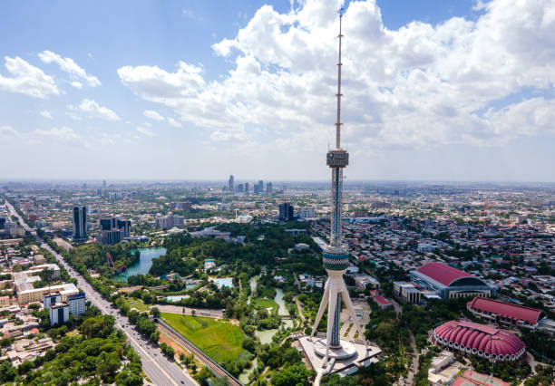
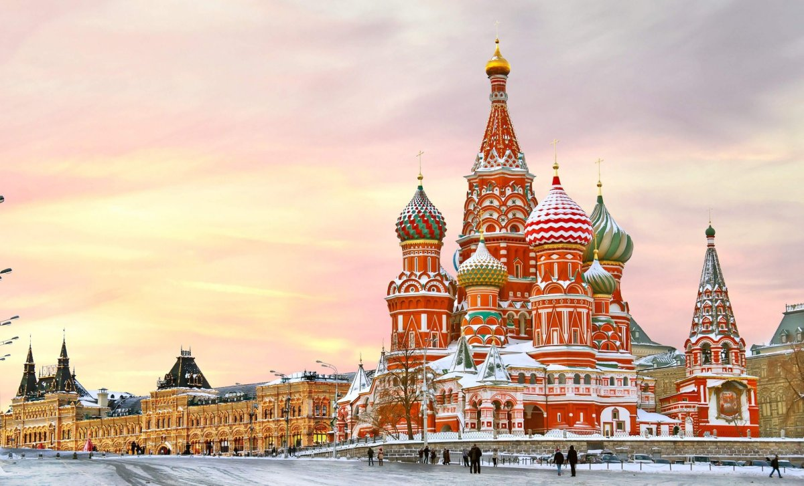

Ташкент - столица Узбекистана. Расположен на крайнем северо-востоке Узбекистана, у подножия западных отрогов Тянь-Шаня, на высоте 440-480 метров над уровнем моря. Ташкент - столица Узбекистана. Расположен на крайнем северо-востоке Узбекистана, у подножия западных отрогов Тянь-Шаня, на высоте 440-480 метров над уровнем моря.

Лондон - столица Великобритании и Северной Ирландии. Расположен на юго-востоке Англии, на берегу Северного моря. Лондон - столица Великобритании и Северной Ирландии. Расположен на юго-востоке Англии, на берегу Северного моря.
Москва - столица Российской Федерации. Расположена в центральной части Восточно-Европейской равнины, на обоих берегах реки Москвы. Москва - столица Российской Федерации. Расположена в центральной части Восточно-Европейской равнины, на обоих берегах реки Москвы.
